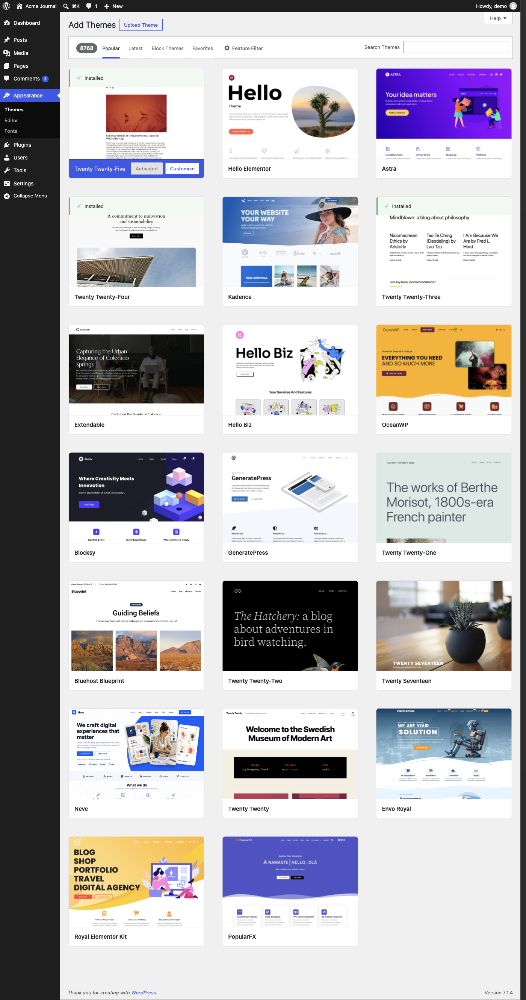

Screen spec · p038
Add Themes
A browsable catalogue of themes from the public theme directory (8768 found), opened on the "Popular" tab and showing 20 theme cards, with search, a feature filter and "Upload Theme".

View 1 capture →Spec items
| ID | Type | Spec | Condition | Evidence | Confidence | Notes |
|---|---|---|---|---|---|---|
SPEC-p038-01 | Display | A count badge showing "8768" precedes the tabs "Popular", "Latest", "Block Themes" and "Favorites", with "Popular" selected. | Always | init | Verified | The count comes from the external directory and will change over time |
SPEC-p038-02 | Display | The grid shows 20 theme cards in three columns, each with a screenshot and the theme name. | "Popular" tab, first load | init | Verified | |
SPEC-p038-03 | Display | Themes already on the site ("Twenty Twenty-Five", "Twenty Twenty-Four", "Twenty Twenty-Three") carry a green "Installed" banner with a check mark at the top of their card. | Theme is installed | init | Verified | |
SPEC-p038-04 | Display | The card of the active theme is highlighted in blue and shows a disabled-looking "Activated" button and a "Customize" button. | Theme is active | init | Verified | |
SPEC-p038-05 | Action | Cards of themes that are not installed have "Install" and "Preview" controls, and installed inactive ones have "Activate", which appear to be revealed on hover. | Pointer over a card | - | Inferred | Present in the page text but not visible in the capture |
SPEC-p038-06 | Action | Pressing "Install" probably downloads the theme to the site, after which the card offers "Activate". | Theme not installed | - | Inferred | Not pressed |
SPEC-p038-07 | List & search | A "Search Themes" box at the right of the filter bar probably searches the directory as the user types. | Always | init | Inferred | The box is visible; the behaviour is inferred |
SPEC-p038-08 | Action | Pressing "Feature Filter" probably opens a panel of checkboxes for narrowing themes by subject, features and layout. | Always | - | Inferred | Not pressed |
SPEC-p038-09 | Action | Pressing "Upload Theme" next to the heading probably reveals a file field for installing a theme from a ZIP file. | Always | - | Inferred | Not pressed |
About this screen
Purpose
Finds and installs additional themes for the site, either from the directory or by uploading a theme file.
Shown when
Shown when "Add Theme" is pressed on the Themes screen (/wp-admin/theme-install.php?browse=popular). Probably limited to administrators, and needs an outside connection to load the catalogue.
Who uses it and how
Administrators browse or search for a theme, preview it, install it, and then activate it.
Main features
- Browsing the theme directory by "Popular", "Latest", "Block Themes" and "Favorites"
- Keyword search and "Feature Filter"
- Per-theme "Details & Preview", "Install" and "Preview"
- Marking of installed and active themes
- "Upload Theme" for installing from a file
UI elements and behavior
| Element | Behavior | Notes |
|---|---|---|
| "Upload Theme" button | Outlined button next to the "Add Themes" heading. | Not pressed |
| Filter bar tabs | "Popular", "Latest", "Block Themes", "Favorites" switch the listing. | "Favorites" probably asks for a directory user name |
| "Feature Filter" (gear icon) | Opens advanced filtering. | Not pressed |
| "Search Themes" box | Keyword search over the directory. | |
| Theme cards | Screenshot and name; hover probably shows "Details & Preview" with "Install"/"Preview" or "Activate". | 20 cards loaded |
| "Installed" banner | Green strip at the top of cards for themes already on the site. | Three cards |
Input fields
| Field | Type | Required | Assumed validation | Notes |
|---|---|---|---|---|
| Search Themes | search | No | Free-text keyword | |
| Theme ZIP file (via "Upload Theme") | file | Yes, to upload | Probably a .zip archive within the site's upload size limit | Field not shown until "Upload Theme" is pressed (inferred) |
Usage flow
- On the Themes screen, press "Add Theme".
- Browse a tab, search by keyword or use "Feature Filter".
- Hover a theme and open "Details & Preview" or "Preview" to inspect it.
- Press "Install", then "Activate" to switch the site to the theme.
- Alternatively press "Upload Theme" and install from a ZIP file.
Navigation
| Trigger | Goes to | Notes |
|---|---|---|
| Side menu "Themes" | p010 Themes | |
| "Customize" on the active theme card | p011 Site Editor | Inferred; not pressed |
| "Activate" on an installed theme card | p010 Themes | Inferred; not pressed |
| "Details & Preview" / "Preview" on a card | Theme preview overlay (not captured) | Inferred |
Variants and business rules
States and variants
Captured on the "Popular" tab after the first batch of 20 cards loaded; more cards probably load on scrolling. The other tabs, the feature filter panel, the upload form, the preview overlay, search results and the offline/error state were not captured. The screenshot is a tall full-page capture.
Business rules and constraints
Installing a theme and activating it are separate steps. Themes already installed are flagged so they are not installed twice.
Open questions
- Whether further themes load automatically on scroll and how many per batch.
- What is shown if the theme directory cannot be reached.
- How "Favorites" identifies the user.
Auto-extracted data (headings, links, buttons, tables, click decisions)
Headings
- H1: Add Themes
- H2: Filter themes list
- H2: Themes list
- H3: Twenty Twenty-Five
- H3: Hello Elementor
- H3: Astra
- H3: Twenty Twenty-Four
- H3: Kadence
- H3: Twenty Twenty-Three
- H3: Extendable
- H3: Hello Biz
- H3: OceanWP
- H3: Blocksy
- H3: GeneratePress
- H3: Twenty Twenty-One
- H3: Bluehost Blueprint
- H3: Twenty Twenty-Two
- H3: Twenty Seventeen
- H3: Neve
- H3: Twenty Twenty
- H3: Envo Royal
- H3: Royal Elementor Kit
- H3: PopularFX
Tables
-
Internal links
| Text | URL | Notes |
|---|---|---|
| Skip to main content | http://localhost:8899/wp-admin/theme-install.php?browse=popular#wpbody-content | |
| Skip to toolbar | http://localhost:8899/wp-admin/theme-install.php?browse=popular#wp-toolbar | |
| Dashboard | http://localhost:8899/wp-admin/index.php | |
| Home | http://localhost:8899/wp-admin/index.php | |
| Updates | http://localhost:8899/wp-admin/update-core.php | |
| Posts | http://localhost:8899/wp-admin/edit.php | |
| All Posts | http://localhost:8899/wp-admin/edit.php | |
| Add Post | http://localhost:8899/wp-admin/post-new.php | Excluded pattern: post-new\.php |
| Categories | http://localhost:8899/wp-admin/edit-tags.php?taxonomy=category | |
| Tags | http://localhost:8899/wp-admin/edit-tags.php?taxonomy=post_tag | |
| Media | http://localhost:8899/wp-admin/upload.php | |
| Library | http://localhost:8899/wp-admin/upload.php | |
| Add Media File | http://localhost:8899/wp-admin/media-new.php | |
| Pages | http://localhost:8899/wp-admin/edit.php?post_type=page | |
| All Pages | http://localhost:8899/wp-admin/edit.php?post_type=page | |
| Add Page | http://localhost:8899/wp-admin/post-new.php?post_type=page | Excluded pattern: post-new\.php |
| Comments 1 1 Comment in moderation | http://localhost:8899/wp-admin/edit-comments.php | |
| Appearance | http://localhost:8899/wp-admin/themes.php | |
| Themes | http://localhost:8899/wp-admin/themes.php | |
| Editor | http://localhost:8899/wp-admin/site-editor.php | |
| Fonts | http://localhost:8899/wp-admin/font-library.php | |
| Plugins | http://localhost:8899/wp-admin/plugins.php | |
| Installed Plugins | http://localhost:8899/wp-admin/plugins.php | |
| Add Plugin | http://localhost:8899/wp-admin/plugin-install.php | |
| Users | http://localhost:8899/wp-admin/users.php | |
| All Users | http://localhost:8899/wp-admin/users.php | |
| Add User | http://localhost:8899/wp-admin/user-new.php | |
| Profile | http://localhost:8899/wp-admin/profile.php | |
| Tools | http://localhost:8899/wp-admin/tools.php | |
| Available Tools | http://localhost:8899/wp-admin/tools.php | |
| Import | http://localhost:8899/wp-admin/import.php | |
| Export | http://localhost:8899/wp-admin/export.php | |
| Site Health 2 | http://localhost:8899/wp-admin/site-health.php | |
| Export Personal Data | http://localhost:8899/wp-admin/export-personal-data.php | Risky URL keyword: export |
| Erase Personal Data | http://localhost:8899/wp-admin/erase-personal-data.php | |
| Theme File Editor | http://localhost:8899/wp-admin/theme-editor.php | |
| Plugin File Editor | http://localhost:8899/wp-admin/plugin-editor.php | |
| Settings | http://localhost:8899/wp-admin/options-general.php | |
| General | http://localhost:8899/wp-admin/options-general.php | |
| Connectors | http://localhost:8899/wp-admin/options-connectors.php | |
| Writing | http://localhost:8899/wp-admin/options-writing.php | |
| Reading | http://localhost:8899/wp-admin/options-reading.php | |
| Discussion | http://localhost:8899/wp-admin/options-discussion.php | |
| Media | http://localhost:8899/wp-admin/options-media.php | |
| Permalinks | http://localhost:8899/wp-admin/options-permalink.php | |
| Privacy | http://localhost:8899/wp-admin/options-privacy.php | |
| Menu | http://localhost:8899/wp-admin/theme-install.php?browse=popular# | |
| About WordPress | http://localhost:8899/wp-admin/about.php | |
| About WordPress | http://localhost:8899/wp-admin/about.php | |
| Get Involved | http://localhost:8899/wp-admin/contribute.php | |
| ⌘K Open command palette | http://localhost:8899/wp-admin/theme-install.php?browse=popular# | |
| 1 1 Comment in moderation | http://localhost:8899/wp-admin/edit-comments.php | |
| New | http://localhost:8899/wp-admin/post-new.php | Excluded pattern: post-new\.php |
| Post | http://localhost:8899/wp-admin/post-new.php | Excluded pattern: post-new\.php |
| Media | http://localhost:8899/wp-admin/media-new.php | |
| Page | http://localhost:8899/wp-admin/post-new.php?post_type=page | Excluded pattern: post-new\.php |
| User | http://localhost:8899/wp-admin/user-new.php | |
| Howdy, demo | http://localhost:8899/wp-admin/profile.php | |
| demoEdit Profile | http://localhost:8899/wp-admin/profile.php | |
| Overview | http://localhost:8899/wp-admin/theme-install.php?browse=popular#tab-panel-overview | |
| Previewing and Installing | http://localhost:8899/wp-admin/theme-install.php?browse=popular#tab-panel-installing | |
| Block themes | http://localhost:8899/wp-admin/theme-install.php?browse=popular#tab-panel-block_themes | |
| Popular | http://localhost:8899/wp-admin/theme-install.php?browse=popular# | |
| Latest | http://localhost:8899/wp-admin/theme-install.php?browse=popular# | |
| Block Themes | http://localhost:8899/wp-admin/theme-install.php?browse=popular# | |
| Favorites | http://localhost:8899/wp-admin/theme-install.php?browse=popular# | |
| Customize | http://localhost:8899/wp-admin/site-editor.php?return=%2Fwp-admin%2Ftheme-install.php | |
| Install | http://localhost:8899/wp-admin/update.php?action=install-theme&theme=hello-elementor&_wpnonce=7fa287de54 | State-changing token in URL: _wpnonce |
| Install | http://localhost:8899/wp-admin/update.php?action=install-theme&theme=astra&_wpnonce=9db1d4f69f | State-changing token in URL: _wpnonce |
| Activate | http://localhost:8899/wp-admin/themes.php?action=activate&_wpnonce=cdeae90c68&stylesheet=twentytwentyfour | State-changing token in URL: _wpnonce |
| Install | http://localhost:8899/wp-admin/update.php?action=install-theme&theme=kadence&_wpnonce=9559d12fa9 | State-changing token in URL: _wpnonce |
| Activate | http://localhost:8899/wp-admin/themes.php?action=activate&_wpnonce=a86dd2239f&stylesheet=twentytwentythree | State-changing token in URL: _wpnonce |
| Install | http://localhost:8899/wp-admin/update.php?action=install-theme&theme=extendable&_wpnonce=4cadd44342 | State-changing token in URL: _wpnonce |
| Install | http://localhost:8899/wp-admin/update.php?action=install-theme&theme=hello-biz&_wpnonce=acc25d510f | State-changing token in URL: _wpnonce |
| Install | http://localhost:8899/wp-admin/update.php?action=install-theme&theme=oceanwp&_wpnonce=ab0c52e924 | State-changing token in URL: _wpnonce |
| Install | http://localhost:8899/wp-admin/update.php?action=install-theme&theme=blocksy&_wpnonce=e1b053d0f6 | State-changing token in URL: _wpnonce |
| Install | http://localhost:8899/wp-admin/update.php?action=install-theme&theme=generatepress&_wpnonce=8b4ed06691 | State-changing token in URL: _wpnonce |
| Install | http://localhost:8899/wp-admin/update.php?action=install-theme&theme=twentytwentyone&_wpnonce=13a8829a6a | State-changing token in URL: _wpnonce |
| Install | http://localhost:8899/wp-admin/update.php?action=install-theme&theme=bluehost-blueprint&_wpnonce=2236ab5c79 | State-changing token in URL: _wpnonce |
| Install | http://localhost:8899/wp-admin/update.php?action=install-theme&theme=twentytwentytwo&_wpnonce=8d46a86f8f | State-changing token in URL: _wpnonce |
| Install | http://localhost:8899/wp-admin/update.php?action=install-theme&theme=twentyseventeen&_wpnonce=d35ff1c4ed | State-changing token in URL: _wpnonce |
| Install | http://localhost:8899/wp-admin/update.php?action=install-theme&theme=neve&_wpnonce=d8e02561cb | State-changing token in URL: _wpnonce |
| Install | http://localhost:8899/wp-admin/update.php?action=install-theme&theme=twentytwenty&_wpnonce=bd01f9db4a | State-changing token in URL: _wpnonce |
| Install | http://localhost:8899/wp-admin/update.php?action=install-theme&theme=envo-royal&_wpnonce=63f9e25ac1 | State-changing token in URL: _wpnonce |
| Install | http://localhost:8899/wp-admin/update.php?action=install-theme&theme=royal-elementor-kit&_wpnonce=ca7780c224 | State-changing token in URL: _wpnonce |
| Install | http://localhost:8899/wp-admin/update.php?action=install-theme&theme=popularfx&_wpnonce=0d5480b4b4 | State-changing token in URL: _wpnonce |
External links
| Text | URL |
|---|---|
| WordPress.org | https://wordpress.org/ |
| Documentation | https://wordpress.org/documentation/ |
| Learn WordPress | https://learn.wordpress.org/ |
| Support | https://wordpress.org/support/forums/ |
| Feedback | https://wordpress.org/support/forum/requests-and-feedback |
| Acme Journal | http://localhost:8899/ |
| Visit Site | http://localhost:8899/ |
| Log Out | http://localhost:8899/wp-login.php?action=logout&_wpnonce=3c75f1926c |
| Documentation on Adding New Themes | https://wordpress.org/documentation/article/appearance-themes-screen/#install-themes |
| Documentation on Block Themes | https://wordpress.org/documentation/article/block-themes/ |
| Support forums | https://wordpress.org/support/forums/ |
| WordPress Theme Directory | https://wordpress.org/themes/ |
| WordPress | https://wordpress.org/ |
| Please log in again. | http://localhost:8899/wp-login.php |
Safety decision for clickable elements
| Element | Type | Decision | Reason | Selector |
|---|---|---|---|---|
| Skip to main content | a | Skip | Not clicked (pages are opened by URL) | |
| Skip to toolbar | a | Skip | Not clicked (pages are opened by URL) | |
| Collapse Menu | button | Skip | Not clicked (pages are opened by URL) | |
| ⌘K Open command palette | menuitem | Skip | Not clicked (pages are opened by URL) | |
| Help | button | Skip | Not clicked (pages are opened by URL) | |
| Upload Theme | button | Skip | Blocked keyword: upload | |
| Popular | a | Skip | Not clicked (pages are opened by URL) | |
| Latest | a | Skip | Not clicked (pages are opened by URL) | |
| Block Themes | a | Skip | Blocked keyword: lock | |
| Favorites | a | Skip | Not clicked (pages are opened by URL) | |
| Feature Filter | button | Skip | Not clicked (pages are opened by URL) | |
| Activated | button | Skip | Blocked keyword: activate | |
| Preview | button | Skip | Not clicked (pages are opened by URL) | |
| Preview | button | Skip | Not clicked (pages are opened by URL) | |
| Preview | button | Skip | Not clicked (pages are opened by URL) | |
| Preview | button | Skip | Not clicked (pages are opened by URL) | |
| Preview | button | Skip | Not clicked (pages are opened by URL) | |
| Preview | button | Skip | Not clicked (pages are opened by URL) | |
| Preview | button | Skip | Not clicked (pages are opened by URL) | |
| Preview | button | Skip | Not clicked (pages are opened by URL) | |
| Preview | button | Skip | Not clicked (pages are opened by URL) | |
| Preview | button | Skip | Not clicked (pages are opened by URL) | |
| Preview | button | Skip | Not clicked (pages are opened by URL) | |
| Preview | button | Skip | Not clicked (pages are opened by URL) | |
| Preview | button | Skip | Not clicked (pages are opened by URL) | |
| Preview | button | Skip | Not clicked (pages are opened by URL) | |
| Preview | button | Skip | Not clicked (pages are opened by URL) | |
| Preview | button | Skip | Not clicked (pages are opened by URL) | |
| Preview | button | Skip | Not clicked (pages are opened by URL) |
Body text (start)
Skip to main content Skip to toolbar Dashboard Home Updates Posts All Posts Add Post Categories Tags Media Library Add Media File Pages All Pages Add Page Comments 1 1 Comment in moderation Appearance Themes Editor Fonts Plugins Installed Plugins Add Plugin Users All Users Add User Profile Tools Available Tools Import Export Site Health 2 Export Personal Data Erase Personal Data Theme File Editor Plugin File Editor Settings General Connectors Writing Reading Discussion Media Permalinks Privacy Collapse Menu About WordPress Acme Journal ⌘K Open command palette 1 1 Comment in moderation New Howdy, demo Help Add Themes Upload Theme Filter themes list 8768 Popular Latest Block Themes Favorites Feature Filter Search Themes Themes list Installed Details & Preview Twenty Twenty-Five Activated Customize Details & Preview Hello Elementor Install Preview Details & Preview Astra Install Preview Installed Details & Preview Twenty Twenty-Four Activate Details & Preview Kadence Install Preview Installed Details & Preview Twenty Twenty-Three Activate Details & Preview Extendable Install Preview Details & Preview Hello Biz Install Preview Details & Preview OceanWP Install Preview Details & Preview Blocksy Install Preview Details & Preview GeneratePress Install Preview Details & Preview Twenty Twenty-One Install Preview Details & Preview Bluehost Blueprint Install Preview Details & Preview Twenty Twenty-Two Install Preview Details & Preview Twenty Seventeen Install Preview Details & Preview N